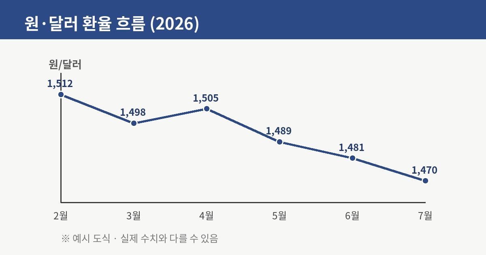
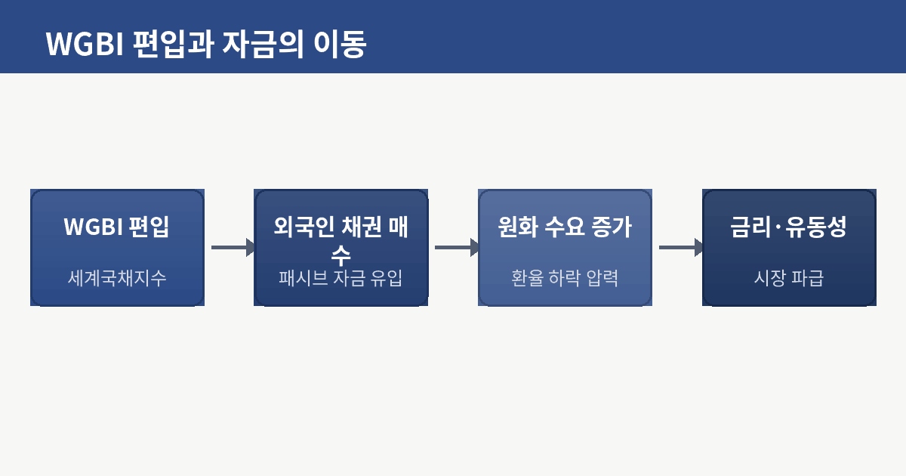
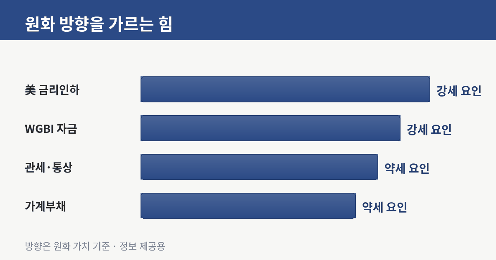
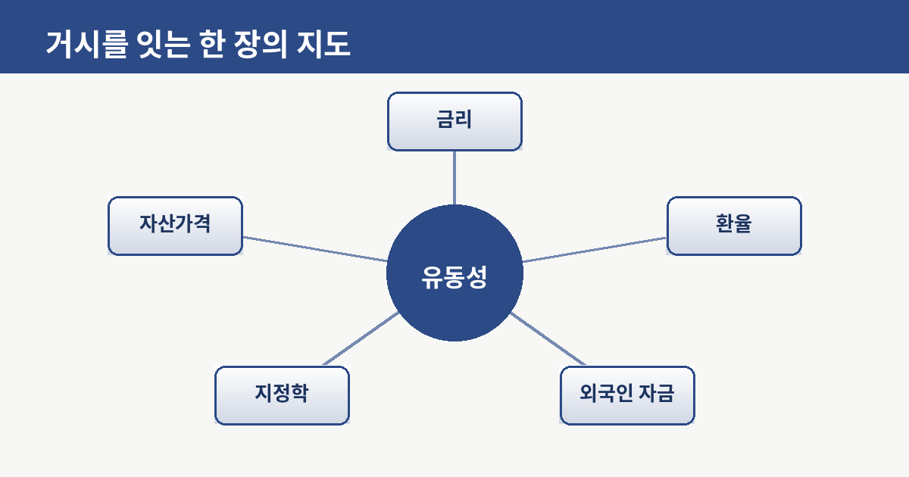

원·달러 1470원과 WGBI 편입 — 외국인 돈은 지금 어디로 흐르나

기준금리 이야기가 신문 1면을 채우는 사이, 조용히 방향을 바꾼 지표가 하나 있습니다. 바로 원·달러 환율입니다. 지난겨울 1,500원을 웃돌던 환율은 최근 1,470원 안팎까지 내려왔습니다. 숫자로 보면 몇십 원의 움직임이지만, 그 안에는 전 세계 돈이 어디로 흐르는지가 압축돼 있습니다. 오늘은 이 흐름을 통화 하나가 아니라 '자금의 지도' 위에서 읽어보겠습니다.

환율은 두 나라의 힘겨루기다
환율은 결국 원화와 달러의 상대 가격입니다. 달러가 귀해지면 환율이 오르고, 원화를 사려는 수요가 늘면 환율이 내립니다. 최근 원화가 강해진 배경에는 크게 두 축이 있습니다. 하나는 미국 쪽 사정이고, 다른 하나는 한국 채권시장으로 들어오는 외국인 돈입니다. 미국이 금리 인하 기조로 돌아서면 달러의 매력이 상대적으로 줄고, 그동안 미국으로 쏠렸던 자금이 신흥국과 한국 같은 시장으로 눈을 돌립니다. 달러 약세는 그 자체로 원화 강세 압력이 됩니다.
WGBI 편입이라는 큰 물꼬
여기에 구조적인 변수가 하나 더 겹쳤습니다. 한국 국채의 세계국채지수(WGBI) 편입입니다. WGBI는 전 세계 연기금과 펀드가 국채를 담을 때 기준으로 삼는 지수인데, 여기에 한국 국채가 정식 편입되면 이 지수를 그대로 따라가는 '패시브 자금'이 규칙에 따라 한국 채권을 사들이게 됩니다. 개별 판단이 아니라 지수 구성 비중을 맞추기 위한 기계적인 매수인 만큼, 상당한 규모의 외국인 자금이 채권시장으로 유입될 수 있습니다. 이렇게 들어온 외국인은 한국 국채를 사기 위해 원화를 필요로 하고, 그 원화 수요가 다시 환율을 끌어내리는 힘으로 작동합니다.

강세만 있는 건 아니다 — 반대편의 힘
그렇다고 원화가 일방적으로 강해진다고 단정할 수는 없습니다. 반대 방향으로 미는 힘도 만만치 않기 때문입니다. 첫째는 통상 환경입니다. 미국의 관세 정책이 본격화하면 수출 의존도가 높은 한국 경제에는 부담이 되고, 이는 원화 약세 요인으로 돌아옵니다. 둘째는 국내의 구조적 리스크, 특히 가계부채입니다. 빚에 눌린 소비가 성장의 발목을 잡으면 원화의 기초 체력도 약해집니다. 결국 환율은 '강세 요인'과 '약세 요인'이 줄다리기한 결과이며, 지금은 강세 쪽으로 조금 기운 국면이라고 보는 편이 정확합니다.

환율 하나가 아니라 지도를 보라
이 대목에서 한 걸음 물러설 필요가 있습니다. 환율은 독립된 숫자가 아니라 금리, 유동성, 외국인 자금, 지정학이 서로 얽힌 그물의 한 매듭입니다. 미국 금리가 내리면 달러가 풀리고, 그 유동성이 한국 채권으로 흘러들어 환율을 누르며, 낮아진 환율은 다시 수입 물가와 국내 금리 결정에 영향을 줍니다. 하나를 당기면 다른 매듭이 함께 움직이는 구조입니다. 그래서 '환율이 올랐다/내렸다'만 볼 게 아니라, 지금 세계의 돈이 위험을 감수하려는지(risk-on) 아니면 안전을 찾는지(risk-off)라는 큰 기류를 함께 읽어야 방향이 보입니다.

생활자의 관점에서
거창한 이야기 같지만 우리 삶과도 맞닿아 있습니다. 환율이 내리면 해외여행과 직구, 수입 물가에는 숨통이 트이고, 반대로 수출 기업의 채산성에는 압박이 됩니다. 원화 자산과 달러 자산의 비중을 어떻게 나눌지도 이 흐름과 무관하지 않습니다. 다만 방향이 정해졌다고 확신하는 순간이 가장 위험합니다. 관세 한 마디, 미국 지표 하나에 기류는 언제든 뒤집힐 수 있으니까요. 그래서 결론은 늘 같은 자리로 돌아옵니다. 한쪽에 몰지 말고, 큰 흐름을 이해한 채로 분산해두는 것. 그것이 개인이 취할 수 있는 가장 현실적인 태도입니다.